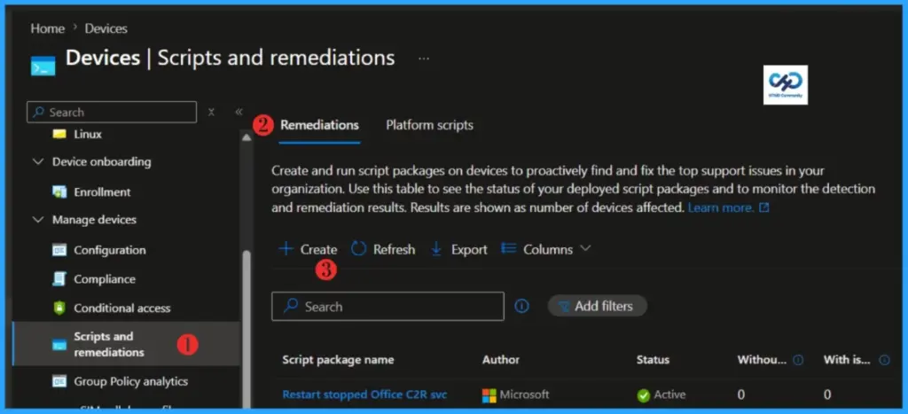
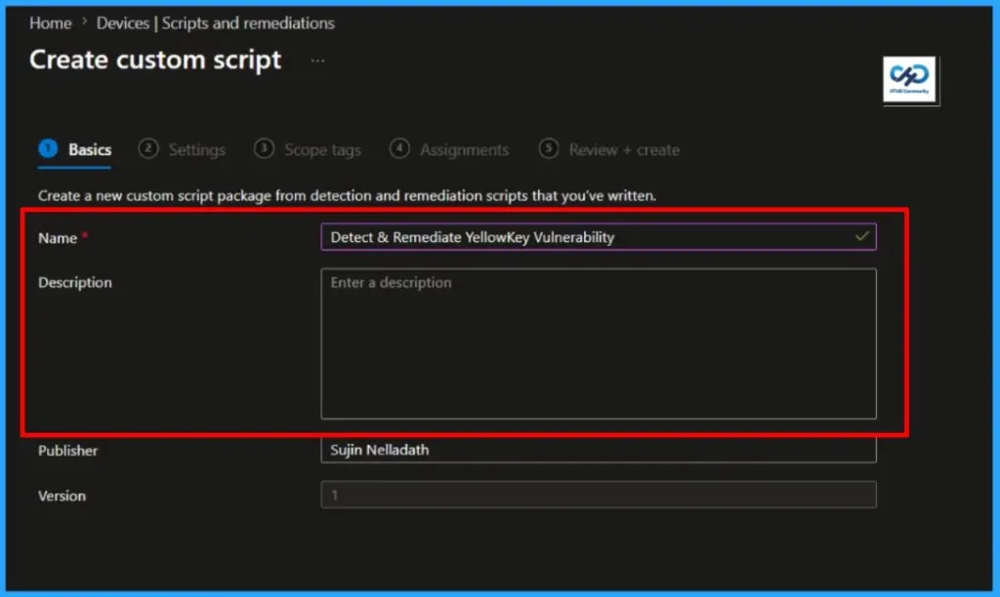
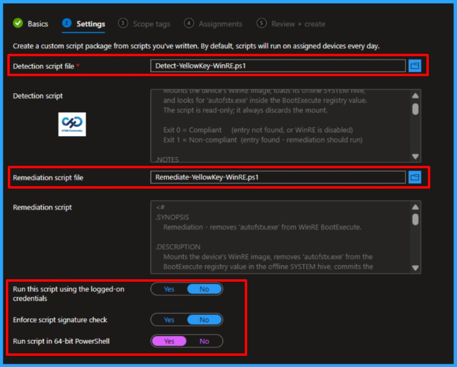
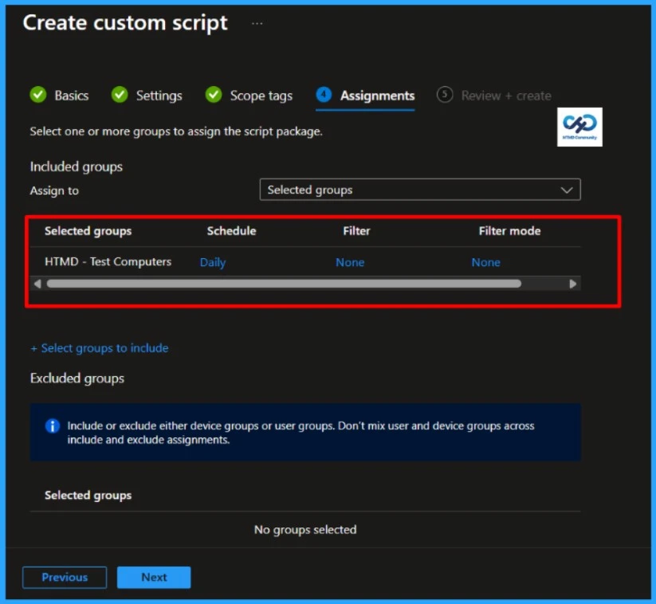
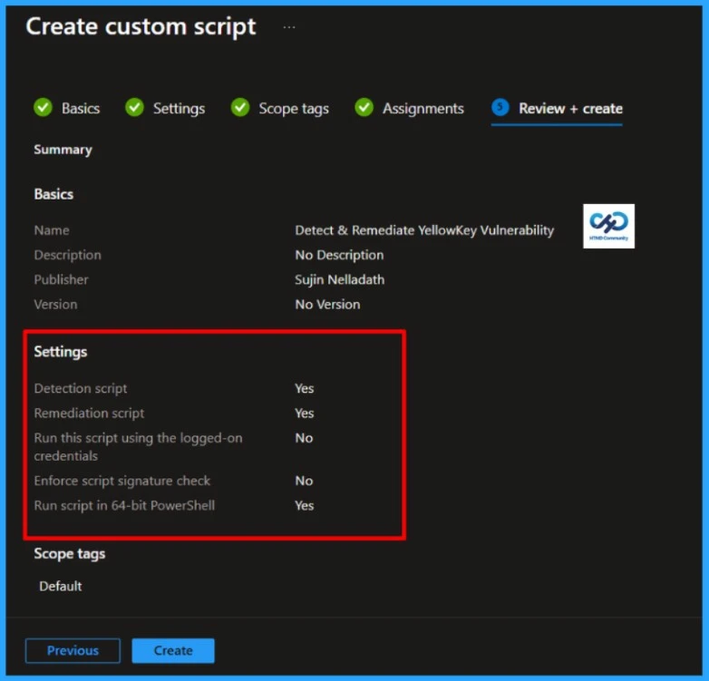

Key Takeaways:
- The YellowKey vulnerability (CVE‑2026‑45585) is a critical BitLocker bypass in the WinRE
- It allows attackers with physical access to Windows 11 and Windows Server 2022/2025 machines to unlock encrypted drives without a password or recovery key.
- Windows 10 is not affected.
- It was discovered in May 2026 and publicly disclosed by researcher “Nightmare Eclipse.”
YellowKey: BitLocker Bypass CVE‑2026‑45585 – Detect & Remediate Automatically with Microsoft Intune! A new zero‑day dubbed YellowKey is undermining BitLocker — the very feature meant to safeguard sensitive data on Windows. First disclosed by researcher Chaotic Eclipse, this isn’t a theoretical flaw; it’s a practical bypass that grants attackers with physical access direct entry into encrypted drives on Windows 11 and Windows Server 2022/2025. For now, Windows 10 remains unaffected, offering its users a brief reprieve.
Table of Contents
How YellowKey Gets Exploited – YellowKey: BitLocker Bypass CVE‑2026‑45585 – Detect & Remediate Automatically with Microsoft Intune
Windows Recovery Environment (WinRE) is a built‑in component on Windows 11 and Windows Server 2022/2025, stored in a hidden recovery partition. Attackers don’t need to mount it manually — it’s already part of the operating system. The YellowKey vulnerability is triggered when crafted FsTx logs are introduced through a USB drive or EFI partition.
| Aspect | Details |
|---|---|
| Name | YellowKey – BitLocker Bypass |
| CVE ID | CVE‑2026‑45585 |
| Discovered By | Researcher Nightmare Eclipse (May 2026) |
| Type | Zero‑day security feature bypass |
| Affected Systems | Windows 11, Windows Server 2022, Windows Server 2025 |
During a reboot into WinRE, those logs manipulate the environment to delete winpeshl.ini. Without this file, WinRE defaults to launching a command shell. At that point, because the TPM has already unlocked the BitLocker drive, the attacker gains full, decrypted access. Importantly, there is no “YellowKey file” present on your system by default. The exploit relies on external malicious input combined with WinRE’s flawed logic.
How Hackers Unlock BitLocker with YellowKey
YellowKey isn’t a malware file you can spot — it’s a design flaw in how WinRE handles NTFS transaction logs. Attackers must have physical access to the device. They boot into WinRE (for example, by holding Shift + Restart or booting directly into recovery mode).
NOTE! FsTx logs are NTFS transaction records used to guarantee file system consistency. They ensure that operations like file creation or deletion can be rolled back or completed safely after a crash. YellowKey abuses this mechanism by injecting crafted logs that trick WinRE into bypassing BitLocker.Once in WinRE, they inject crafted FsTx logs via a USB drive or EFI partition. The exploit chain then runs automatically as WinRE processes those logs, ultimately bypassing BitLocker protection and granting decrypted access.
PowerShell Script to Detect the YellowKey Vulnerability
Having already analysed the impact of the YellowKey vulnerability (CVE‑2026‑45585) on enterprise security, I’ve developed a PowerShell script to detect it. This script can be seamlessly integrated into Intune Proactive Remediations as the detection logic, enabling automated identification across managed endpoints. You can download the PowerShell Script to detect the YellowKey Vulnerability from the GitHub repository.
<#
.SYNOPSIS
Detection - checks WinRE for the YellowKey (autofstx.exe) entry.
.DESCRIPTION
Mounts the device's WinRE image, loads its offline SYSTEM hive,
and looks for 'autofstx.exe' inside the BootExecute registry value.
The script is read-only; it always discards the mount.
Exit 0 = Compliant (entry not found, or WinRE is disabled)
Exit 1 = Non-compliant (entry found - remediation should run)
.NOTES
Author : Sujin Nelladath
Date : 2026-06-11
Run as : SYSTEM, 64-bit PowerShell (Intune Remediations)
#>
# ---------- Settings ----------
$EntryToCheck = "autofstx.exe"
$MountPath = "C:\Mount"
$HiveName = "WinREHive"
$LogDir = "C:\temp\YellowKeyVulnerabilty\logs"
# ---------- Logging ----------
if (-not (Test-Path $LogDir)) {
New-Item -ItemType Directory -Path $LogDir -Force | Out-Null
}
$LogFile = Join-Path $LogDir ("Detect-YellowKey_{0}.log" -f (Get-Date -Format "yyyyMMdd-HHmmss"))
function Write-Log {
param(
[string]$Message,
[ValidateSet("INFO","WARN","ERROR","OK")]
[string]$Level = "INFO"
)
$line = "{0} [{1}] {2}" -f (Get-Date -Format "yyyy-MM-dd HH:mm:ss"), $Level, $Message
Add-Content -Path $LogFile -Value $line
switch ($Level) {
"ERROR" { Write-Host $line -ForegroundColor Red }
"WARN" { Write-Host $line -ForegroundColor Yellow }
"OK" { Write-Host $line -ForegroundColor Green }
default { Write-Host $line }
}
}
Write-Log "==== YellowKey detection started ===="
Write-Log "Looking for entry: $EntryToCheck"
# ---------- Step 1: Is WinRE enabled? ----------
# reagentc /info shows a "\\?\GLOBALROOT\device\..." path only when WinRE is enabled.
# This works on any Windows language (the path is not localized).
$reagentInfo = (& reagentc /info 2>&1) -join "`n"
if ($reagentInfo -notmatch '\\\\\?\\GLOBALROOT.*Recovery\\WindowsRE') {
Write-Log "WinRE is disabled or not configured. Reporting compliant." "WARN"
exit 0
}
Write-Log "WinRE is enabled." "OK"
# ---------- Step 2: Prepare an empty mount folder ----------
if (Test-Path $MountPath) {
if (Get-ChildItem -Path $MountPath -Force) {
Write-Log "Mount folder $MountPath is not empty. Aborting." "ERROR"
exit 1
}
} else {
New-Item -ItemType Directory -Path $MountPath -Force | Out-Null
}
# ---------- Step 3: Mount WinRE ----------
& reagentc /mountre /path $MountPath | Out-Null
if ($LASTEXITCODE -ne 0) {
Write-Log "reagentc /mountre failed (exit $LASTEXITCODE)." "ERROR"
exit 1
}
Write-Log "WinRE mounted at $MountPath" "OK"
# ---------- Step 4: Load the offline SYSTEM hive ----------
$HivePath = "$MountPath\Windows\System32\config\SYSTEM"
& reg load "HKLM\$HiveName" $HivePath | Out-Null
if ($LASTEXITCODE -ne 0) {
Write-Log "reg load failed - cannot read offline hive." "ERROR"
& reagentc /unmountre /path $MountPath /discard | Out-Null
Remove-Item $MountPath -Recurse -Force -ErrorAction SilentlyContinue
exit 1
}
Write-Log "Offline hive loaded as HKLM\$HiveName" "OK"
# ---------- Step 5: Read BootExecute and look for the entry ----------
$RegPath = "HKLM:\$HiveName\ControlSet001\Control\Session Manager"
$BootExecute = (Get-ItemProperty -Path $RegPath -Name "BootExecute" -ErrorAction SilentlyContinue).BootExecute
$Vulnerable = $false
if ($BootExecute) {
Write-Log "Current BootExecute: $($BootExecute -join ' | ')"
foreach ($entry in $BootExecute) {
# Match the entry whether it's "autofstx.exe" or "autofstx.exe <args>"
if ($entry -match "^\s*$([regex]::Escape($EntryToCheck))(\s|$)") {
Write-Log "Vulnerable entry found: $entry" "ERROR"
$Vulnerable = $true
}
}
} else {
Write-Log "BootExecute value not found (treating as compliant)."
}
# ---------- Step 6: Cleanup (detection never modifies the WIM) ----------
[gc]::Collect()
Start-Sleep -Seconds 1
& reg unload "HKLM\$HiveName" | Out-Null
& reagentc /unmountre /path $MountPath /discard | Out-Null
Remove-Item $MountPath -Recurse -Force -ErrorAction SilentlyContinue
Write-Log "Cleanup complete."
# ---------- Step 7: Report result ----------
if ($Vulnerable) {
Write-Log "Result: NON-COMPLIANT" "ERROR"
exit 1
}
Write-Log "Result: COMPLIANT" "OK"
exit 0
The detection script identifies the presence of the YellowKey vulnerability, and now it’s time to move into remediation. Specifically, the code inspects the BootExecute registry value and flags devices as non‑compliant if it contains autofsxe.exe. The following remediation script then removes the malicious entry and restores system integrity, effectively fixing the YellowKey vulnerability. You can download the remediation code my GitHub Repository
<#
.SYNOPSIS
Remediation - removes 'autofstx.exe' from WinRE BootExecute.
.DESCRIPTION
Mounts the device's WinRE image, removes 'autofstx.exe' from the
BootExecute registry value in the offline SYSTEM hive, commits the
change back to the WIM, and re-seals WinRE so BitLocker re-measures it.
Exit 0 = Success (or no change needed)
Exit 1 = Failure
.NOTES
Author : Sujin Nelladath
Date : 2026-06-11
Run as : SYSTEM, 64-bit PowerShell (Intune Remediations)
#>
# ---------- Settings ----------
$EntryToRemove = "autofstx.exe"
$MountPath = "C:\Mount"
$HiveName = "WinREHive"
$LogDir = "C:\temp\YellowKeyVulnerabilty\logs"
# ---------- Logging ----------
if (-not (Test-Path $LogDir)) {
New-Item -ItemType Directory -Path $LogDir -Force | Out-Null
}
$LogFile = Join-Path $LogDir ("Remediate-YellowKey_{0}.log" -f (Get-Date -Format "yyyyMMdd-HHmmss"))
function Write-Log {
param(
[string]$Message,
[ValidateSet("INFO","WARN","ERROR","OK")]
[string]$Level = "INFO"
)
$line = "{0} [{1}] {2}" -f (Get-Date -Format "yyyy-MM-dd HH:mm:ss"), $Level, $Message
Add-Content -Path $LogFile -Value $line
switch ($Level) {
"ERROR" { Write-Host $line -ForegroundColor Red }
"WARN" { Write-Host $line -ForegroundColor Yellow }
"OK" { Write-Host $line -ForegroundColor Green }
default { Write-Host $line }
}
}
Write-Log "==== YellowKey remediation started ===="
Write-Log "Entry to remove: $EntryToRemove"
# ---------- Step 1: Is WinRE enabled? ----------
$reagentInfo = (& reagentc /info 2>&1) -join "`n"
if ($reagentInfo -notmatch '\\\\\?\\GLOBALROOT.*Recovery\\WindowsRE') {
Write-Log "WinRE is disabled. Nothing to remediate." "WARN"
exit 0
}
Write-Log "WinRE is enabled." "OK"
# ---------- Step 2: Suspend BitLocker for one reboot (so PCRs don't trip) ----------
try {
$bl = Get-BitLockerVolume -MountPoint $env:SystemDrive -ErrorAction Stop
if ($bl.ProtectionStatus -eq 'On') {
Suspend-BitLocker -MountPoint $env:SystemDrive -RebootCount 1 | Out-Null
Write-Log "BitLocker suspended on $($env:SystemDrive) for 1 reboot." "OK"
} else {
Write-Log "BitLocker not active - no suspend needed."
}
} catch {
Write-Log "BitLocker check skipped: $($_.Exception.Message)" "WARN"
}
# ---------- Step 3: Prepare an empty mount folder ----------
if (Test-Path $MountPath) {
if (Get-ChildItem -Path $MountPath -Force) {
Write-Log "Mount folder $MountPath is not empty. Aborting." "ERROR"
exit 1
}
} else {
New-Item -ItemType Directory -Path $MountPath -Force | Out-Null
}
# ---------- Step 4: Mount WinRE ----------
& reagentc /mountre /path $MountPath | Out-Null
if ($LASTEXITCODE -ne 0) {
Write-Log "reagentc /mountre failed." "ERROR"
exit 1
}
Write-Log "WinRE mounted at $MountPath" "OK"
# ---------- Step 5: Load the offline SYSTEM hive ----------
$HivePath = "$MountPath\Windows\System32\config\SYSTEM"
& reg load "HKLM\$HiveName" $HivePath | Out-Null
if ($LASTEXITCODE -ne 0) {
Write-Log "reg load failed." "ERROR"
& reagentc /unmountre /path $MountPath /discard | Out-Null
Remove-Item $MountPath -Recurse -Force -ErrorAction SilentlyContinue
exit 1
}
Write-Log "Offline hive loaded as HKLM\$HiveName" "OK"
# ---------- Step 6: Edit BootExecute ----------
$RegPath = "HKLM:\$HiveName\ControlSet001\Control\Session Manager"
$Current = (Get-ItemProperty -Path $RegPath -Name "BootExecute" -ErrorAction SilentlyContinue).BootExecute
$ChangesMade = $false
if ($Current) {
Write-Log "Current BootExecute: $($Current -join ' | ')"
# Keep every entry that does NOT start with autofstx.exe
$Pattern = "^\s*$([regex]::Escape($EntryToRemove))(\s|$)"
$Updated = @($Current | Where-Object { $_ -and ($_ -notmatch $Pattern) })
if ($Updated.Count -lt $Current.Count) {
# Force REG_MULTI_SZ so the value type stays correct even if 0/1 entries remain
Set-ItemProperty -Path $RegPath -Name "BootExecute" -Value ([string[]]$Updated) -Type MultiString
Write-Log "Removed '$EntryToRemove' from BootExecute." "OK"
Write-Log "New BootExecute: $($Updated -join ' | ')"
$ChangesMade = $true
} else {
Write-Log "'$EntryToRemove' not present - no change needed."
}
} else {
Write-Log "BootExecute value not found - no change needed."
}
# ---------- Step 7: Unload the hive ----------
[gc]::Collect()
Start-Sleep -Seconds 2
& reg unload "HKLM\$HiveName" | Out-Null
if ($LASTEXITCODE -ne 0) {
# One retry - hive handles can take a moment to release
Start-Sleep -Seconds 3
& reg unload "HKLM\$HiveName" | Out-Null
}
Write-Log "Offline hive unloaded."
# ---------- Step 8: Unmount WinRE ----------
if ($ChangesMade) {
& reagentc /unmountre /path $MountPath /commit | Out-Null
Write-Log "WinRE unmounted and changes committed." "OK"
} else {
& reagentc /unmountre /path $MountPath /discard | Out-Null
Write-Log "WinRE unmounted (no changes)."
}
Remove-Item $MountPath -Recurse -Force -ErrorAction SilentlyContinue
# ---------- Step 9: Re-seal WinRE (only if we changed something) ----------
if ($ChangesMade) {
& reagentc /disable | Out-Null
& reagentc /enable | Out-Null
if ($LASTEXITCODE -ne 0) {
Write-Log "reagentc /enable failed - run it manually to recover." "ERROR"
exit 1
}
Write-Log "WinRE re-sealed (disable + enable)." "OK"
}
Write-Log "==== Remediation complete ====" "OK"
exit 0
Follow these steps to fix the YellowKey Vulnerability using the Intune Remediation Script Policy. Log in to the Microsoft Intune Admin Center using your admin credentials.
- Navigate to Devices > Windows > Scripts and remediations
- Click on Remediations > +Create

In the Basics details pane, we can name the PowerShell script as “Detect & Remediate YellowKey Vulnerability” If necessary, provide a brief description of the script and click Next.

In the Script settings pane, we can set the configurations according to our requirements. The Detection script file and Remediation script file are mandatory; we must browse and select our saved PS Script here.

On the next page, keep the default scope tags. If any custom scope tags are available based on your requirements, you can select them for this script deployment. Click on Next and assign the script to HTMD – Test Computers. You can click Assign to and select the desired device group in the Selected groups section.

On the Review + create pane, thoroughly check all the settings you have defined. Once you confirm everything is correct, select Create to implement the changes.

I trust that this article will significantly benefit you and your organization. I appreciate your patience in reading this post. I look forward to seeing you in the next post. Keep supporting the HTMD Community.
Need Further Assistance or Have Technical Questions?
Join the LinkedIn Page and Telegram group to get the latest step-by-step guides and news updates. Join our Meetup Page to participate in User group meetings. Also, Join the WhatsApp Community to get the latest news on Microsoft Technologies. We are there on Reddit as well.
Author
About the Author: Sujin Nelladath, a Microsoft Graph MVP with over 13 years of experience in Intune device management and Automation solutions, writes and shares his experiences with Microsoft device management technologies, Azure, DevOps, Graph API and PowerShell automation.